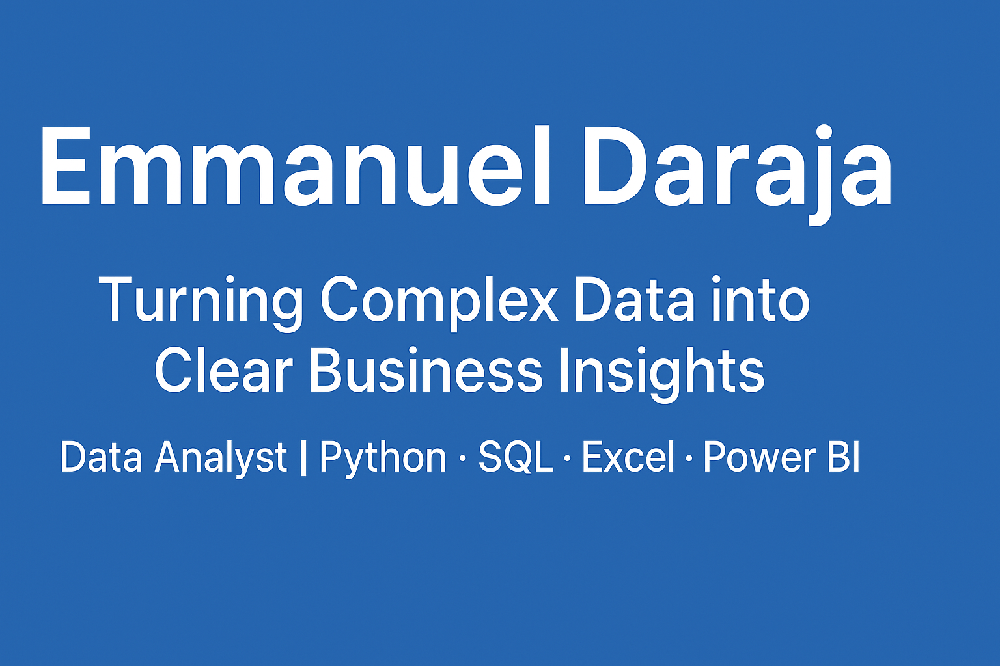

📊 Portfolio Projects

Key Drivers of Superstore Revenue & Profitability
End-to-end retail analysis using Excel & Python. Includes pivot-driven dashboards, a reproducible Jupyter Notebook, and an executive summary slide for stakeholders.
Tools: Excel · Python (pandas, matplotlib) · PowerPoint
View Project Download Slide 📑 Case Study PDF

Sales Performance Dashboard
Interactive dashboard tracking revenue, regional performance, and product mix across 3 years.
Tools: Power BI · Excel
View ProjectForbes Billionaires Analysis (1997–2024)
Analysis of global wealth distribution, industries, and regions over nearly three decades using Python.
Tools: Python (pandas, matplotlib)
View ProjectAutomated Reporting Workflows
Automated scripts for data cleaning, transformation, and analysis, reducing reporting time by ~30%.
Tools: Python · ETL
View Project